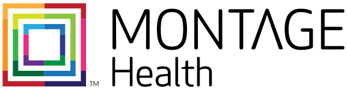
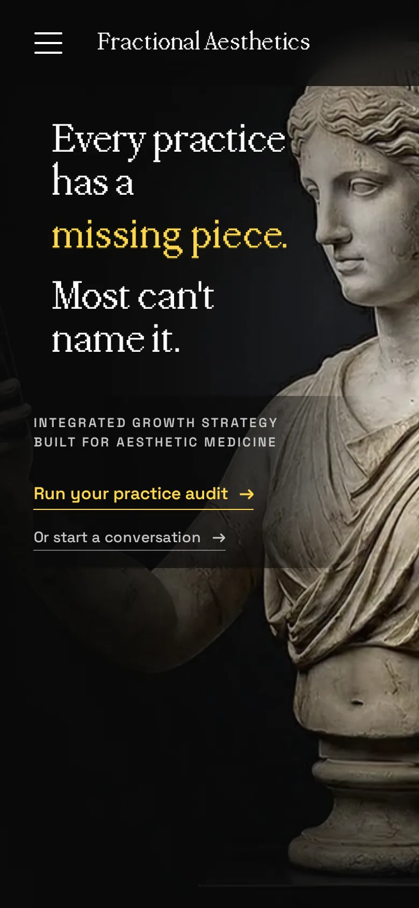

01 · Healthcare (B2B)
My Career.
Most of my career has lived in healthcare, born of a long interest in human medicine and in some of the hardest problems there are. The work runs from product strategy and clinical and consumer experience to health data and analytics and taking all of it to market at scale. I keep an employer’s specifics to myself, but the interest behind the work is old and real.
I go deep on capacity management across inpatient and outpatient, front-to-mid revenue cycle, and clinical AI tooling at the point of care and beyond.
02 · The work
Where I’ve worked.
Systems I’ve worked with


Globally

03 · The venture
Fractional Aesthetics.
My newest venture in healthcare B2B is Fractional Aesthetics. My team audits aesthetic practices, gives owners a clear read on where they stand, and hands them a plan they can run. I work alongside practice owners as an operator and as a builder of bespoke automated systems to fill the gaps we find.

fractionalaesthetics.com ↗